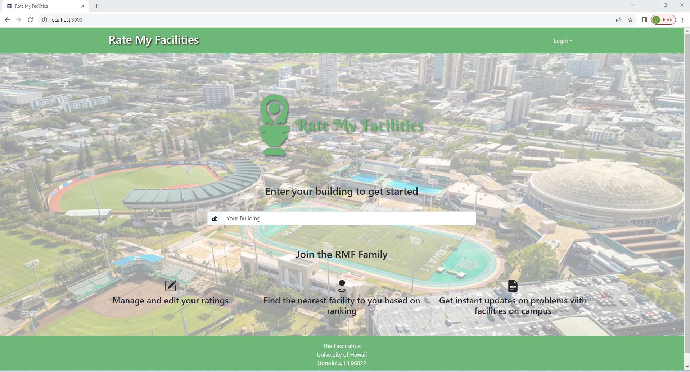

Rate My Facilities Web Application
For my final project in ICS 314: Software Engineering, my team and I wanted to create a web application that would improve the quality of life for students on campus. Our idea was a service that operates similar to Rate My Professor. However, instead of rating Professor’s the students could look up facilities around campus that are close to them, including restrooms, water fountains, and study spaces. These facilities could be sorted by ranking, what type, and which building they come from. Users could also contribute themselves by creating an account and adding their own reviews. Finally, a serious issue at a facility could be signified with a press of the button, allowing site admins to review the issue and resolve it.
For my main contributions, I designed and created the landing page, sign up page, and sign-in page.

For the landing page, I kept the design simple, with a search bar that users can use to find facilities at a specific building. It also includes information that helps new users understand the functionality of the website. The main challenge I had was with routing to the buildings page with the information that was typed into the search bar. Then, using that information to display the relevant popup.


For the onboarding and the sign-in page, we only accepted an email and password which are used to log-in and a username which is attached to a user’s review. The only challenges I had with these pages were making sure the information got inserted into the appropriate collections.
Although these were the main three pages I worked on, I also contributed to a number of other issues related to other pages. For example, I handled the listing of the facilities on the buildings page along with improving the functionality of each individual facility page. The most difficult problem that I solved was the linking of two different collections that our website used. We had a facility collection, which held information for each individual facility such as building and floor. We also had a review collection that needed a relationship with the facility collection using each unique facility id. Implementing this involved routing to the add facility page using a unique facility id, then storing it as a property for that specific review. Other than that, I also created tests for each of the pages in order to make sure they are displaying and the forms work correctly.
Overall, this project taught me how to work in a collaborative environment in order to complete a big project. There were a lot of steps along the way, including the creation of an organized project management system that divided up the work evenly and kept everyone on task. There was also a lot of communication involved with having to play to everyone’s strengths and schedule. As for the actual implementation, this project definitely required the use of all the software engineering concepts I had learned in ICS 314. From functional programming to user interface frameworks, I needed to understand these concepts and apply them as I worked on this project.